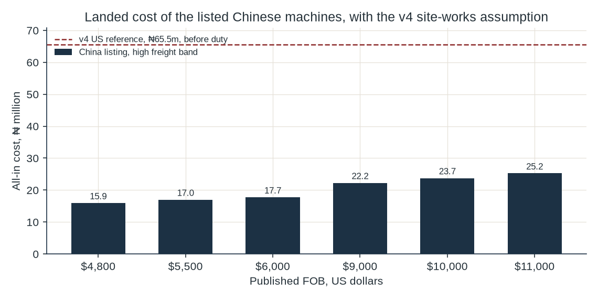
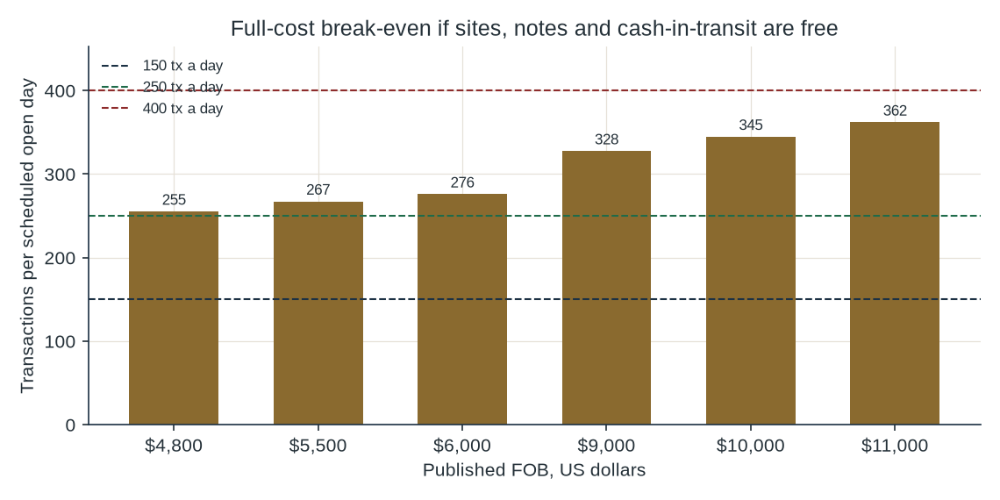

Addendum to the bank-backed machine study
A v4.1 test of published Chinese FOB prices, landed in Nigeria, with no debt, a 60/40 bank share, and government support treated as a scenario rather than a contract.
The cheapest whole kiosk with a manufacturer price on the page is US$4,800. Landed, with the border charges that could be sourced and with the same install and software assumptions as v4, it costs about ₦15.93 million. Full-cost break-even is 255 transactions on a scheduled open day. At 150 and at 250 the machine does not pay back inside seven years. At 400 it sits on the 28% line and falls through it when freight is at the top of the published band. Cash reinvested from one such machine buys four more in seven years, and only if every machine does 400 transactions a day and there is no head office. The listings do not show a naira validator, PCI DSS or EMV. That is a compliance stop even before the cash-flow arithmetic.
v4 priced a US deposit ATM at about ₦65.53 million before duty and found that a 60/40 share does not pay for it. This paper asks a narrower question. If the box is a Chinese kiosk at a price that is actually printed on a supplier page, and if the state really does give the site, the small notes and the cash-in-transit, and if CashEase borrows nothing and keeps 60% of the fee, does one machine pay, and can its cash buy the next one?
Three answers are already fixed by the evidence, before the arithmetic.
| Listing | What it is | Printed price | Used in the model |
|---|---|---|---|
| Hongzhou HZ-3326, Shenzhen manufacturer | Cash in/out kiosk. Page lists RoHS, CE and ISO. Cabinet 400 × 420 × 1,900 mm. HS code printed as 8471604000. | US$5,500 for 1–9. US$4,800 for 10 or more. | Yes. Both prices. |
| GRGintech showroom, GRGBanking brand, Guangzhou | CCS-30 banknote and coin recycler. FOB terms are stated. | US$9,000–10,000 a piece. | Yes. Both ends. |
| GRGintech, same showroom | Banknote dispenser module for retail and gaming. | US$4,900. | No. A module is not a kiosk. |
| Shenzhen Rong Mei Guang, Alibaba reseller | Described as a GRG H68N whole cash-recycling machine. Not the GRG factory. | US$6,000–11,000, minimum one piece. | Yes, as a reseller band, not a factory quote. |
| Parts-channel page for a GRG DT-7000 / H68N | Also offers new generic and refurbished stock, 90-day warranty, lead time of a few days. | US$1,500–2,500. | No. That channel is not a deployable-kiosk quote. |
| Hongzhou currency-exchange kiosk | Cash acceptor and coin dispenser. | US$2,999 to US$3,599. | No. It is a different product. |
| Hyosung CDU-1100 | Front-load dispenser part. | US$500–1,400. | No. No Hyosung China machine price was found. |
The exchange rate is the same one used in v4: ₦1,331.69 per dollar, the NFEM close on 5 October 2026.22
Ocean freight from Shenzhen to Lagos, port to port, is published at US$2,970 to US$3,450 for a 20-foot container.9,10 A forwarder puts terminal handling at ₦250,000 to ₦450,000 a container and clearing at ₦150,000 to ₦350,000.11 Those are forwarder ranges, not a terminal tariff. Assumption Ten kiosks in one 20-foot container. The Hongzhou cabinet is 0.319 cubic metres before a crate, so ten machines leave most of the box unused. The assumption raises freight per machine rather than pretending a full cube. It is not a packing quote. Freight per machine on that split is US$297 at the low ocean rate and US$345 at the high rate.
Hongzhou prints HS 8471.60.40.00.1 A third-party tariff page gives a representative Nigeria rate of 5% for heading 8471.60 and says the national 8-digit and 10-digit line is not in its file. It tells the importer to confirm the line with Nigeria Customs.12 The Customs CET portal was opened. It did not return an ATM ruling for this paper.13 Result Duty in the table is 5% of CIF, labeled as that representative rate, not as a classification. A forwarder also describes an ETLS and inspection charge of about 1.5%.11 That approximation is not in the sum. If it is real, landed cost is higher.
VAT is 7.5% under section 148 of the Nigeria Tax Act 2025, as set out by a statute note, and the rate is unchanged by the 2026 reform.14,15 It is applied to CIF plus the 5% duty. SON’s published product-certificate fee for unregistered status is US$500, and a SONCAP certificate is US$350 a consignment.18 Split across the ten-kiosk assumption, that is US$85 a machine. The 5% of FOB import-permit charge, minimum ₦550,000, is a different route, for manufacturers bringing in machinery. It is not applied to a commercial kiosk.
Installation and solar at ₦6.00 million, and software and certification effort at ₦2.00 million, are the v4 assumptions. They were not re-quoted for a Chinese box. They are about half the landed cost of the US$4,800 machine. Spares have no Nigerian invoice in the file. Annual maintenance stays at 10% of the FOB converted to naira, the same rule of thumb as v4. Insurance stays at 1.5% of all-in. Both are assumptions.
| Listing | FOB | Landed, low band | Landed, high band | Cash break-even | Full-cost break-even |
|---|---|---|---|---|---|
| Hongzhou cash in/out kiosk, 10+ price | US$4,800 | ₦15.81m | ₦15.93m | 150 | 255 |
| Hongzhou cash in/out kiosk, 1–9 price | US$5,500 | ₦16.87m | ₦16.98m | 155 | 267 |
| Reseller listing, GRG H68N, bottom of range | US$6,000 | ₦17.62m | ₦17.73m | 158 | 276 |
| GRGintech CCS-30 recycler, low FOB | US$9,000 | ₦22.13m | ₦22.24m | 180 | 328 |
| GRGintech CCS-30 recycler, high FOB | US$10,000 | ₦23.63m | ₦23.74m | 187 | 345 |
| Reseller listing, GRG H68N, top of range | US$11,000 | ₦25.13m | ₦25.25m | 195 | 362 |

Result On the US$4,800 listing the high band is ₦15.93 million. The border piece of that, before the ₦8.00 million of site works, is ₦7.93 million. The US$11,000 end of the reseller band lands at ₦25.25 million. The v4 US machine, still before duty, remains ₦65.53 million.
CashEase pays cash for the machine. There is no debt, so there is no interest to cut. The bank takes 40% of the fee pool and keeps 60% for CashEase. The pool is the v4 mix: ₦145.50 gross, ₦12.60 of shrink, ₦132.90 left. CashEase’s 60% is ₦79.74 a transaction. Public sites are treated as off-site, so the ₦250 surcharge assumption is still in the mix. A bank gallery would not earn it. That case was costed in v4 and is worse.
Scenario, not a contract. Rent is zero. The float’s opportunity cost is zero, on the story that the CBN supplies the notes. Cash-in-transit is zero in the base, and half of the v4 visit assumption in a sensitivity. That half is ₦960,000 a year. Power, the data link and security stay with CashEase. Free ground is not a free guard. The ICRC 1% of gross is not charged, because this scenario is not filed as an ICRC concession. If it were, v4 already shows that fee.
The CBN governor, in July 2026, still tied lower-note scarcity to falling demand. A scenario in which the CBN fills the cassettes is a planning switch. It is not a supply letter.

| FOB | 150 cash | 150 operating | 250 cash | 250 operating | 400 cash | 400 operating |
|---|---|---|---|---|---|---|
| $4,800 | ₦7,196 | -₦2.27m | ₦2.16m | -₦115,092 | ₦5.39m | ₦3.11m |
| $5,500 | -₦101,806 | -₦2.53m | ₦2.05m | -₦374,408 | ₦5.28m | ₦2.86m |
| $6,000 | -₦179,664 | -₦2.71m | ₦1.97m | -₦559,634 | ₦5.20m | ₦2.67m |
| $9,000 | -₦646,812 | -₦3.82m | ₦1.51m | -₦1.67m | ₦4.74m | ₦1.56m |
| $10,000 | -₦802,528 | -₦4.19m | ₦1.35m | -₦2.04m | ₦4.58m | ₦1.19m |
| $11,000 | -₦958,245 | -₦4.56m | ₦1.19m | -₦2.41m | ₦4.42m | ₦817,580 |
| FOB | All-in | Payback at 250 | IRR at 250 | NPV at 250 | Payback at 400 | IRR at 400 | NPV at 400 |
|---|---|---|---|---|---|---|---|
| $4,800 | ₦15.93m | Not within 7 years | -1.3% | -₦9.58m | 3.0 years | 27.7% | -₦97,403 |
| $5,500 | ₦16.98m | Not within 7 years | -4.0% | -₦10.95m | 3.2 years | 24.3% | -₦1.47m |
| $6,000 | ₦17.73m | Not within 7 years | -5.9% | -₦11.93m | 3.4 years | 22.1% | -₦2.45m |
| $9,000 | ₦22.24m | Not within 7 years | -15.8% | -₦17.82m | 4.7 years | 11.1% | -₦8.33m |
| $10,000 | ₦23.74m | Not within 7 years | -18.8% | -₦19.78m | 5.2 years | 8.1% | -₦10.29m |
| $11,000 | ₦25.25m | Not within 7 years | -21.9% | -₦21.74m | 5.7 years | 5.4% | -₦12.25m |
Read the US$4,800 row first. It is the most generous whole-kiosk price on a manufacturer page.
Every dearer listing is worse. The GRGintech CCS-30 at US$9,000 to US$10,000, and the top of the reseller band at US$11,000, have full-cost break-evens of 328 to 362 transactions a day. At 400 their IRRs are 11.1% and 5.4%. Both miss 28%.
Putting back half of the v4 cash-in-transit assumption moves the US$4,800 full-cost break-even from 255 to 300. A subsidy that is only a discount, rather than a waiver, puts 250 transactions back under the line.
The same supports do not rescue the US reference machine. Its cash break-even is still 402 transactions a day and its full-cost break-even is 837. The Chinese sticker is what moves the break-even down. The move stops around 255 transactions, not around 150.
The ₦8.00 million site-works assumption. Strip it out and the US$4,800 machine, high freight band, has an all-in cost of ₦7.93 million, a full-cost break-even of 197 transactions, and an IRR at 400 transactions of 67.6%. That case is shown so the sticker price is not confused with the Nigerian works. The works were not re-quoted. They stay in the verdict.
The rule is equity only. One machine is bought at the start. Each year’s cash profit, and only that, buys the next machine. Nothing is borrowed. The fleet stops at the 2,887 addresses listed in v4, which is a ceiling the cash never reaches.
Result On the US$4,800 machine, high band, at 400 transactions and with no head office, the fleet path over seven years is 1, 1, 1, 2, 2, 3, 4, 5. It ends at 5 machines. At 250 transactions the path stays at one machine, because a year of cash profit does not buy the next box inside the horizon. At 150 it stays at one. The same 400-transaction case, after the v4 head-office assumption of ₦25.00 million a year, also stays at one machine. It takes about 4.6 machines at 400 transactions a day just to cover that office. Starting from one machine, the office consumes the cash before a second machine is bought.
That is the maximum fleet this cash-flow rule produces: five machines in seven years, on the cheapest listing, at a test volume of 400, with the government supports assumed and with no head office. It is not a demand forecast. A 500-machine phase, a 1,500-machine phase and a 20,000-machine phase are not funded by this cash flow.
No public file gives daily transactions for a change kiosk. The number of sites above the break-even is unknown. What is known is the hurdle and the address count.
Result Sites evidenced to clear break-even: none. Maximum fleet the cash-flow rule will buy: 5, and only in the case stated in section 6. A realistic planning fleet, once a head office and a volume below 400 are admitted, is the first machine, kept as a test if a bank and a standards body will touch it, and not a network.
A low FOB does not certify a machine.
Until a named model has written PCI and EMV certificates, a naira fitness test, and a bank that will connect it, the machine cannot be deployed as an ATM. The landed-cost table does not override that.
No-go.
The Chinese listings are real, and they are much cheaper than the US reference. Under a scenario of free sites, free notes, free cash-in-transit, a 60/40 share and no debt, the cheapest manufacturer price still needs about 255 transactions a day to cover full cost. The volumes of 150 and 250 do not pay the machine back inside its seven-year life. The volume of 400 is a tie with the 28% hurdle, and the tie is lost at the top of the published freight band. Cash flow from that tie buys a handful of further machines only if head office is ignored. Head office, on the v4 assumption, stops the fleet at one.
Government backing is not secured. No collections volume was found to add. NAFDAC is the wrong agency. SONCAP is a few hundred dollars and does not prove the machine can take naira. CBN and NIBSS certification for this hardware was not found. The order gate is a certified model at a delivered price inside the economics above, a measured site above 255 transactions a day, and the government supports in a signed paper. None of those three exists. The v4 conclusion stands: do not buy the machines.
FOB naira = printed dollars × 1,331.69.
Freight dollars per machine = container rate / 10. The 10 is an assumption. Container rates used are US$2,970 and US$3,450.
CIF = FOB + freight. Duty = 0.05 × CIF. VAT = 0.075 × (CIF + duty). SONCAP dollars per machine = (500 + 350) / 10.
Border naira = (CIF + duty + VAT + SONCAP dollars) × 1,331.69 + (terminal handling + clearing) / 10.
All-in = border naira + 6,000,000 + 2,000,000. The last two numbers are the v4 assumptions.
CashEase naira per transaction = 0.60 × (145.50 − 12.60) = 79.74.
Cash cost = power + link + security + 10% of FOB naira + 1.5% of all-in. Rent, cash-in-transit and float cost are zero in the base scenario. Full cost adds all-in / 7.
Break-even transactions per open day = annual cost / 79.74 / 270.
NPV discounts the all-in outflow and seven years of cash profit. No salvage. No debt service. IRR is solved between −99% and 500%.
Recompute from model/china_scenario.py. The v4 file model/machine_model.py is not changed.
End of addendum. The v4 PDF and its model are unchanged.